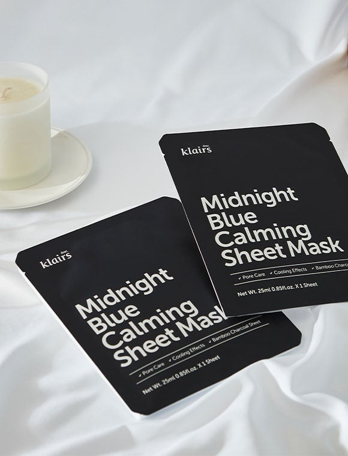
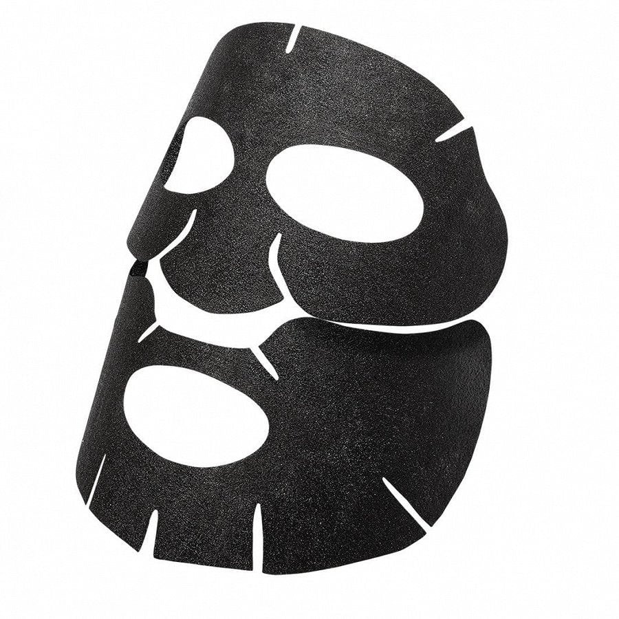
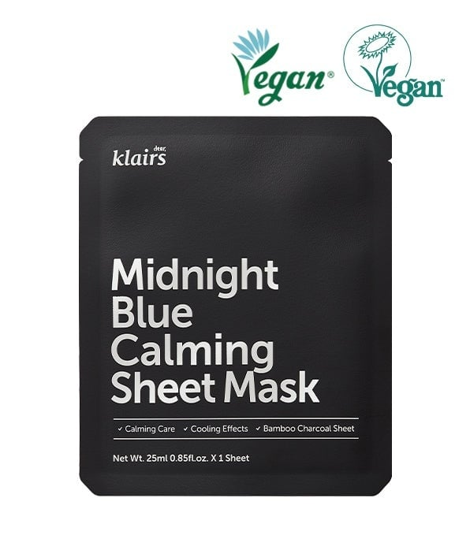
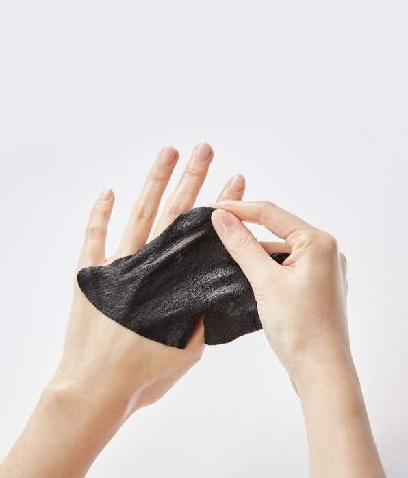

<div> <table style="border-collapse: collapse; width: 100.014%;" border="1"><colgroup><col style="width: 49.9657%;"><col style="width: 49.9657%;"></colgroup> <tbody> <tr> <td> <div><strong><span style="font-size: 14pt;">Dear, Klairs Midnight Blue Masca calmanta de fata</span></strong></div> <div><strong><span style="font-size: 14pt;">25ml</span></strong></div> <div><span style="font-size: 14pt;">Un ritual perfect de spa acasa, ideal pentru calmarea profunda a tenului la finalul unei zile aglomerate.</span></div> </td> <td></td> </tr> <tr> <td></td> <td><span style="font-size: 14pt;">Designul ergonomic si structura inovatoare a mastii Midnight Blue, formata din doua bucati distincte pentru o fixare perfecta pe fata. Culoarea sa neagra provine de la infuzia cu carbune de bambus, oferind o acoperire optima si o aderenta excelenta pe conturul tenului.</span></td> </tr> <tr> <td><span style="font-size: 14pt;">Designul minimalist de un negru mat, insotit de certificarile oficiale Vegan, reflecta calitatea unei formule etice si premium, special concepute pentru ingrijirea porilor, efect racoritor si o calmare intensa.</span></td> <td></td> </tr> <tr> <td></td> <td><span style="font-size: 14pt;">Textura fina, bine imbibata in esenta calmanta, a mastii din carbune de bambus Dear, Klairs. Materialul textil delicat este prezentat in timpul aplicarii, demonstrand elasticitatea, finetea si capacitatea sa de a infuza pielea cu o hidratare revigoranta si profund linistitoare.</span></td> </tr> </tbody> </table> </div>